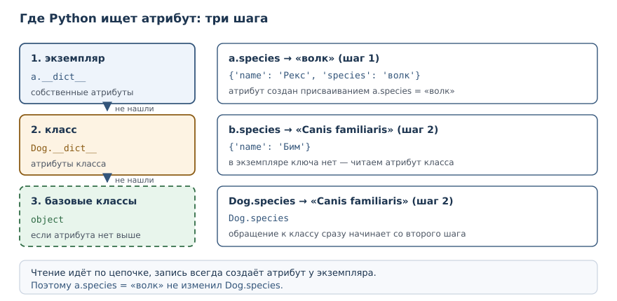
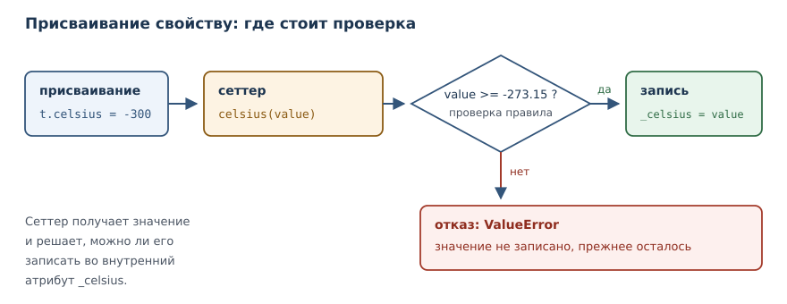

Атрибуты, свойства и инкапсуляция
Как управлять доступом к состоянию: атрибуты класса и экземпляра, соглашения об именах, свойства и контроль инвариантов.
В этой главе
В предыдущей главе состояние объекта было открыто: любой код мог записать в атрибут что угодно, включая значение, нарушающее правила класса. Счёт допускал отрицательный баланс, прямоугольник — отрицательную сторону. Это не ошибка языка, а вопрос дисциплины: Python позволяет закрыть состояние, но не делает это автоматически. В этой главе вы научитесь разделять атрибуты класса и экземпляра, обозначать внутренние части класса соглашениями и проверять значения в момент присваивания с помощью свойств.
26.1 Зачем это нужно
Представьте, что класс Account из прошлой главы используется в большом
приложении. Баланс хранится в атрибуте, и рано или поздно кто-то напишет
acc.balance = acc.balance - 500 без проверки. Отрицательный баланс не
вызовет ошибки, но нарушит правило предметной области: списать больше, чем
есть, нельзя. Найти потом, где именно это произошло, трудно, потому что
присваивание атрибута нигде не отмечено в коде класса.
Инкапсуляция решает эту задачу: состояние перестаёт быть доступным напрямую, а изменения проходят через методы и свойства, которые проверяют правила. У читателя кода появляется единственное место, где можно найти проверку, а у автора класса — возможность менять внутреннее устройство, не ломая чужие вызовы.
26.2 Что вы сможете после этой главы
- различать атрибуты класса и атрибуты экземпляра и объяснять порядок поиска;
- замечать классическую ловушку с изменяемым атрибутом класса;
- объяснять, что инкапсуляция в Python опирается на соглашения, а не на запреты;
- объявлять свойства, доступные без скобок, и управлять присваиванием через сеттер;
- применять искажение имён и понимать, от чего оно защищает.
26.3 Атрибуты класса и атрибуты экземпляра
Атрибут экземпляра — атрибут, хранящийся в конкретном экземпляре и образующий его состояние.
Атрибут класса — атрибут, хранящийся в классе и общий для всех экземпляров, если экземпляр не переопределил его.
Разница видна, если объявить атрибут прямо в теле класса, вне методов:
class Dog:
species = "Canis familiaris"
def __init__(self, name):
self.name = name
a = Dog("Рекс")
b = Dog("Бим")
print(Dog.species)
print(a.species, b.species)
print(a.name, b.name)
a.species = "волк"
print(a.species, b.species, Dog.species)
print(a.__dict__)
print(b.__dict__)
Canis familiaris
Canis familiaris Canis familiaris
Рекс Бим
волк Canis familiaris Canis familiaris
{'name': 'Рекс', 'species': 'волк'}
{'name': 'Бим'}
species объявлен в классе, поэтому доступен и через класс, и через любой
экземпляр. name создаётся в методе инициализации у каждого экземпляра
отдельно. Присваивание a.species = "волк" не изменило класс: оно создало
атрибут экземпляра, который перекрыл классовый. Словари экземпляров
показывают это прямо: у a два собственных атрибута, у b — один.
Отсюда правило поиска атрибута: сначала экземпляр, затем класс, затем
базовые классы. Чтение a.species ищет в a.__dict__, не находит и
поднимается к классу. Именно поэтому атрибут класса удобно использовать для
значений по умолчанию, одинаковых для всех.

| Вид | Где хранится | Кто видит | Типичное применение |
|---|---|---|---|
| атрибут экземпляра | self.x = ... в __init__ |
только этот экземпляр | состояние объекта |
| атрибут класса | тело класса | все экземпляры | общие константы, счётчики |
Экземпляр может переопределить атрибут класса: тогда у него появится собственный атрибут с тем же именем, и чтение пойдёт по цепочке — сначала экземпляр, затем класс.
Ловушка изменяемого атрибута класса
Атрибут класса общий, поэтому изменяемое значение в нём опасно: все экземпляры увидят одни и те же изменения.
class Box:
items = []
def add(self, item):
self.items.append(item)
a = Box()
b = Box()
a.add("яблоко")
print(a.items)
print(b.items)
print(a.items is b.items)
['яблоко']
['яблоко']
True
a.items и b.items — один и тот же список, потому что чтение атрибута
поднялось к классу, а метод append изменил найденный там объект. Ошибка
тихая: ни исключения, ни предупреждения. Лечится она просто — создавать
изменяемое состояние в методе инициализации:
class Box:
def __init__(self):
self.items = []
def add(self, item):
self.items.append(item)
a = Box()
b = Box()
a.add("яблоко")
print(a.items)
print(b.items)
['яблоко']
[]
Правило короткое: неизменяемые значения (числа, строки, кортежи из неизменяемых элементов) можно держать в классе; списки, словари и множества — только в экземпляре.
26.4 Инкапсуляция и соглашения об именах
Инкапсуляция — сокрытие внутреннего состояния за методами и свойствами, чтобы сохранять инварианты класса.
В Python нет ключевого слова private и нет запрета на доступ к атрибуту.
Инкапсуляция строится на соглашениях, и это осознанное решение языка:
Python доверяет программисту и задаёт границы соглашениями, а не запретами.
Граница обозначается именем. Атрибут или метод с одним подчёркиванием в
начале считается внутренним: _balance, _normalize. Это сигнал «не
трогайте снаружи, автор может изменить это без предупреждения». Python не
мешает обратиться к _balance, но читатель кода понимает, что делает это
на свой риск.
Второй уровень — искажение имён. Искажение имён — автоматическое
преобразование имени __name в _Class__name, не дающее случайно
переопределить внутренний атрибут. Два подчёркивания в начале и не более
одного в конце заставляют интерпретатор переименовать атрибут при разборе
класса:
class Wallet:
def __init__(self):
self.__balance = 0
def add(self, amount):
self.__balance += amount
def balance(self):
return self.__balance
w = Wallet()
w.add(100)
print(w.balance())
print(w.__dict__)
100
{'_Wallet__balance': 100}
Внутри класса имя self.__balance читается и пишется нормально, а в словаре
экземпляра видно итоговое _Wallet__balance. Зачем это нужно? Чтобы
подкласс, объявив свой __balance, не перекрыл случайно внутренний атрибут
базового класса: у каждого класса получится своё имя. От прямого доступа это
не защищает — w._Wallet__balance по-прежнему доступно, — но защищает от
случайного столкновения имён.
| Имя | Смысл | Пример |
|---|---|---|
name |
публичное | self.name |
_name |
внутреннее, по соглашению | self._balance |
__name |
искажается в _Class__name |
self.__balance |
__name__ |
зарезервировано языком | __init__ |
Последняя строка важна: имена с двумя подчёркиваниями с обеих сторон
(__init__, __repr__) не искажаются. Они принадлежат модели данных языка,
и подменять их своим смыслом нельзя. Искажение работает только для имён,
которые начинаются с двух подчёркиваний и заканчиваются не более чем одним.
Как проверить, что инкапсуляция действительно работает? Попробуйте нарушить
инвариант снаружи. Если получилось — граница проведена плохо. Для счёта
проверка звучит так: «попробуйте сделать баланс отрицательным, не вызывая
методов класса». Пока balance — обычный атрибут, это удаётся одной строкой.
После перехода на свойство только для чтения такая попытка завершается
ошибкой, и единственный путь изменить состояние проходит через проверку.
Такой эксперимент полезнее чтения кода: он показывает, что именно гарантирует
класс.
26.5 Свойства: вычисляемый атрибут
Инкапсуляция не обязана означать «методы вместо полей». Хороший интерфейс читается как обычное обращение к атрибуту, но позволяет проверить значение. Для этого служит свойство.
property — декоратор, превращающий метод в вычисляемый атрибут, доступный без скобок.
class Temperature:
def __init__(self, celsius):
self._celsius = celsius
@property
def celsius(self):
return self._celsius
t = Temperature(20)
print(t.celsius)
print(t._celsius)
20
20
Метод celsius объявлен с декоратором @property, поэтому обращение
t.celsius вызывает его без скобок. Снаружи это выглядит как атрибут, а
внутри работает код. Приватного атрибута здесь нет: t._celsius доступен,
но соглашение говорит, что изменять его напрямую не следует.
Главное преимущество свойств в том, что переход от атрибута к свойству не
ломает вызывающий код. Класс мог хранить self.celsius как обычный атрибут;
когда понадобилась проверка, атрибут заменили свойством, а вызовы
t.celsius и t.celsius = 25 остались прежними. Именно поэтому в Python
принято начинать с простого атрибута, а свойство добавлять тогда, когда
появилось правило.
Свойство может быть и только для чтения — достаточно объявить метод с
@property и не добавлять сеттер:
class Circle:
def __init__(self, radius):
self._radius = radius
@property
def area(self):
return 3.14159 * self._radius ** 2
c = Circle(2)
print(round(c.area, 2))
12.57
Площадь не хранится: она вычисляется при каждом обращении. Так исключается рассинхронизация — нельзя забыть пересчитать площадь после изменения радиуса. Попытка присвоить значение свойству только для чтения завершается ошибкой:
class Circle:
@property
def area(self):
return 1.0
c = Circle()
print(c.area)
c.area = 5
AttributeError: property 'area' of 'Circle' object has no setter
26.6 Сеттер и контроль инвариантов
Сеттер — метод, вызываемый при присваивании значению свойства; он позволяет проверить значение до записи.
Сеттер объявляется декоратором @имя_свойства.setter и носит то же имя,
что и геттер:
class Temperature:
def __init__(self, celsius):
self.celsius = celsius
@property
def celsius(self):
return self._celsius
@celsius.setter
def celsius(self, value):
if value < -273.15:
raise ValueError("ниже абсолютного нуля")
self._celsius = value
t = Temperature(20)
print(t.celsius)
t.celsius = 25
print(t.celsius)
try:
t.celsius = -300
except ValueError as error:
print("отказ:", error)
print(t._celsius)
try:
Temperature(-300)
except ValueError as error:
print("отказ при создании:", error)
20
25
отказ: ниже абсолютного нуля
25
отказ при создании: ниже абсолютного нуля
Присваивание t.celsius = -300 вызвало сеттер, тот проверил значение и
поднял исключение. Внутреннее поле осталось прежним — 25. Это и есть
инвариант: объект либо находится в допустимом состоянии, либо изменение
отклоняется с объяснением.
Та же проверка работает при создании: конструктор присваивает через свойство, поэтому недопустимое значение не попадёт даже в новый объект.
Так же защищают состояние, которое меняется только методами. Баланс счёта удобно сделать свойством только для чтения, а изменение — операциями:
class Account:
def __init__(self, balance=0):
if balance < 0:
raise ValueError("баланс не может быть отрицательным")
self._balance = balance
@property
def balance(self):
return self._balance
def withdraw(self, amount):
if amount > self._balance:
raise ValueError("недостаточно средств")
self._balance -= amount
return self._balance
acc = Account(100)
print(acc.balance)
print(acc.withdraw(30))
100
70
Снаружи баланс читается как атрибут, но записать его напрямую нельзя:
сеттера нет, поэтому acc.balance = 1000 поднимет AttributeError.
Единственный путь изменить баланс — метод withdraw, где есть проверка.
Граница API класса описана самим кодом, а не комментарием.

26.7 Границы API класса
Инкапсуляция — это ещё и решение о том, что класс показывает наружу. У каждого класса есть публичная часть (то, чем пользуются снаружи) и внутренняя (то, что может измениться). Провести границу помогает вопрос: «если я изменю это завтра, сломаются ли чужие вызовы?»
Публичным стоит делать минимум: методы, которые выражают намерение, и свойства для чтения состояния. Внутренние детали — промежуточные вычисления, служебные поля, кэши — помечают одним подчёркиванием и не обещают сохранить. Такой минимализм не про экономию строк: чем меньше поверхности, тем меньше придётся поддерживать и тем проще менять устройство класса.
Атрибут или свойство: правило выбора
Начинать почти всегда стоит с обычного атрибута. Свойство добавляют, когда
появляется правило, которое нужно проверять при присваивании, или когда
значение нужно вычислять. Проверка в отдельном методе set_balance() хуже
свойства: её можно забыть вызвать, а присваивание свойству происходит в любом
коде, который пишет в это имя.
Есть и цена. Свойство медленнее прямого доступа к атрибуту, потому что за ним стоит вызов функции, и оно усложняет чтение класса. Если правило простое и никогда не изменится, обычного атрибута достаточно. Если правило есть — свойство делает его обязательным, а не рекомендованным.
Что считать публичным
Полезно заранее перечислить публичный интерфейс класса: методы, которые
образуют его смысл. Для счёта это deposit, withdraw, balance; для
прямоугольника — width, height, area. Всё остальное — внутреннее.
Признак хорошей границы: снаружи не нужно знать, как класс хранит состояние.
Можно заменить _celsius на _kelvin, поправить методы — и ни один
вызывающий код не заметит. Если же снаружи постоянно обращаются к
acc._balance, граница проведена неправильно: либо поле должно быть
публичным, либо для чтения нужно свойство.
26.8 Типичные ошибки
- Хранить изменяемое значение в атрибуте класса. Список в теле класса
общий для всех экземпляров; создавайте его в
__init__. - Считать искажение имён защитой.
__balanceпревращается в_Class__balanceи остаётся доступным; это защита от столкновения имён, а не от чтения. - Писать в сеттере
self.celsius = valueвместоself._celsius. Такая запись снова вызовет сеттер, и получится бесконечная рекурсия. - Забывать сеттер и удивляться
AttributeError. Свойство без сеттера доступно только для чтения; это осознанное решение, а не дефект. - Проверять значение в методе, но оставлять атрибут открытым. Пока
acc.balanceможно записать напрямую, инвариант не защищён. - Использовать
__для публичных полей. Два подчёркивания усложняют доступ и подсказки, но ничего не скрывают; для публичного поля нужно имя без подчёркиваний. - Проверять значение только в конструкторе. Если сеттера нет, а поле
открыто, проверка в
__init__защищает ровно один момент — создание объекта. Дальше любой код изменит состояние в обход правила.
26.9 Упражнения
1. Прогноз вывода
Определите, что напечатает программа, и объясните каждую строку:
class Cat:
legs = 4
def __init__(self, name):
self.name = name
a = Cat("Мурка")
b = Cat("Барсик")
b.legs = 3
print(a.legs, b.legs, Cat.legs)
print(a.__dict__)
print(b.__dict__)
2. Атрибут класса для константы
Объявите класс Circle с атрибутом класса PI = 3.14159 и атрибутом
экземпляра radius. Метод area() должен использовать PI. Создайте два
круга и проверьте, что оба видят одну и ту же константу, а радиусы у них
разные.
3. Исправление общей коллекции
Класс задуман так, чтобы у каждого студента был свой список оценок, но оценки появляются у всех сразу:
class Student:
grades = []
def add_grade(self, grade):
self.grades.append(grade)
a = Student()
b = Student()
a.add_grade(5)
print(b.grades)
Объясните причину и исправьте класс.
4. Свойство только для чтения
Объявите класс Rectangle с шириной и высотой и свойством area только для
чтения. Проверьте, что площадь считается, а присваивание r.area = 10
поднимает ошибку.
5. Сеттер с проверкой
Добавьте в класс Rectangle свойство width с сеттером: ширина обязана
быть положительной, иначе поднимается ValueError. Проверьте корректное
присваивание и отказ.
6. Искажение имён
Объявите класс Wallet с внутренним атрибутом __balance, методом
add(amount) и свойством balance только для чтения. Напечатайте словарь
экземпляра и объясните, почему ключ выглядит не так, как в исходном коде.
7. Анализ: свойство вместо атрибута
Класс хранил температуру как обычный атрибут self.celsius. Понадобилось
запретить значения ниже абсолютного нуля. Объясните, почему можно заменить
атрибут свойством и не менять ни одного вызова снаружи. Подтвердите примером
кода, где старый и новый вариант вызываются одинаково.
8. Счётчик созданных объектов
Объявите класс Counter с атрибутом класса total, который увеличивается
в методе инициализации при создании каждого экземпляра. Создайте три
экземпляра и напечатайте total через класс и через экземпляр. Объясните,
почему запись self.total += 1 работает не так, как type(self).total += 1.
9. Исправление рекурсии
Свойство вызывает само себя и падает с RecursionError:
class Temperature:
def __init__(self, celsius):
self.celsius = celsius
@property
def celsius(self):
return self.celsius
@celsius.setter
def celsius(self, value):
self.celsius = value
Найдите ошибку и исправьте класс так, чтобы значение хранилось во внутреннем атрибуте.
10. Мини-проект: товар со скидкой
Объявите класс Product с названием и ценой. Цена задаётся свойством с
проверкой: отрицательная цена отклоняется. Добавьте свойство только для
чтения price_with_discount, возвращающее цену со скидкой 10 % с
округлением до двух знаков. Проверьте изменение цены и отказ при
отрицательном значении.
26.10 Проверка понимания
- Чем атрибут класса отличается от атрибута экземпляра? В каком порядке Python ищет атрибут при чтении?
- Почему список в теле класса опасен, а число — нет?
- Что такое инкапсуляция в Python, если запретов на доступ нет?
- От чего защищает искажение имён и от чего не защищает?
- Зачем нужен сеттер, если можно проверить значение в отдельном методе?
- Почему свойство только для чтения поднимает
AttributeErrorпри присваивании, а не принимает значение молча?
26.11 Что дальше
Состояние теперь защищено правилами класса. Следующий шаг — повторное использование: в главе «Наследование, полиморфизм и композиция» вы увидите, как строить новые классы на основе существующих, когда это помогает, и почему композиция часто оказывается надёжнее.